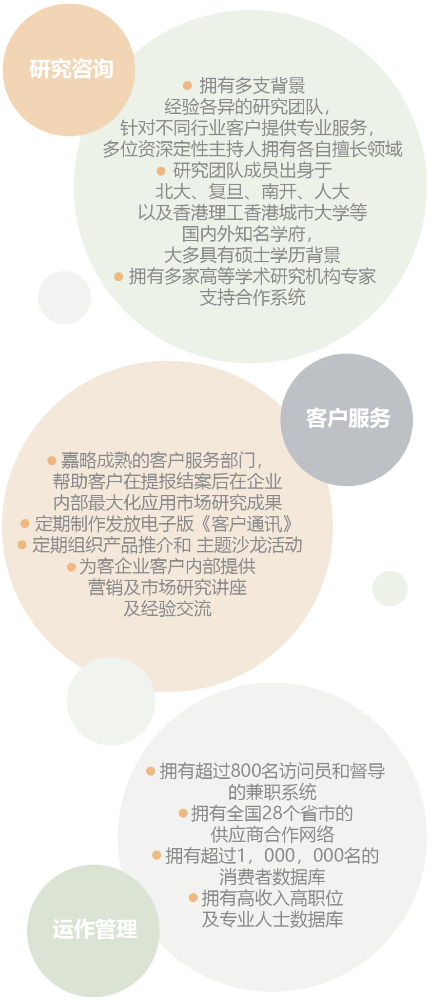
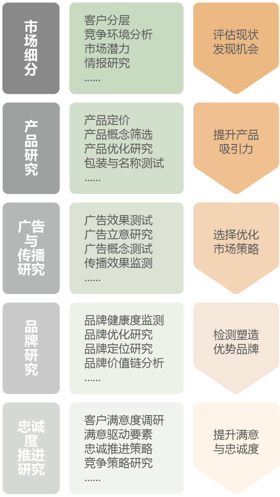
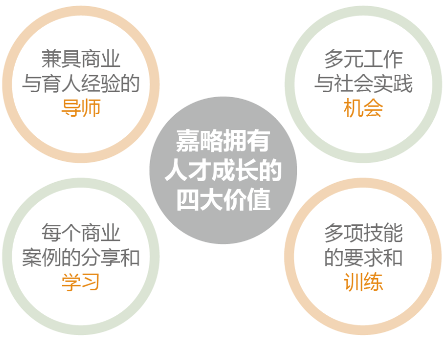
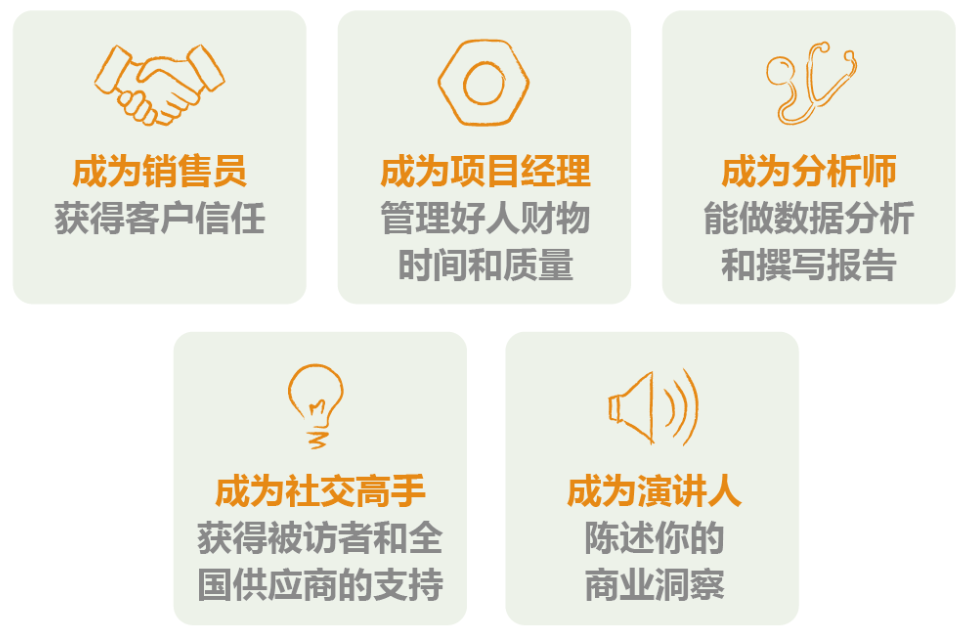
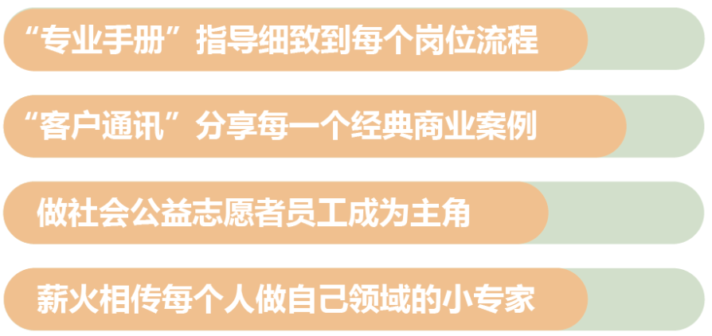

EN
关于我们
ABOUT
长期客户
CLIENTS
研究模型
RESEARCH
经典案例
CASES
精英团队
TEAM
企业声誉
REPUTATION
教育培训
EDUCATION
社会责任
RESPONSIBILITY
精英团队
Excellent Team
嘉略专业团队

团队服务内容
嘉略为您提供全案全程的市场营销解决方案

团队人才建设
嘉略精英团队由资深的专家伙伴及快速成长的优秀名校毕业生组成；
嘉路精心选拔那些刚网走出名校对自我充满探求，具有发展潜质的年轻人；
嘉路鼓励开放创新，嘉奖进取的创业者精神；

团队核心能力
嘉略人才
五大技能
年轻人面试时即被告知：
未来的咨询师，你要快速具备五大能力：

团队核心竞争力
打造核心竞争力！
咨询行业高压下的嘉略年轻团队如何成长和担当？
如何增加年轻人的荣誉和成就，帮助新人承担失败 和挫折？
如何在团队合作中增加智慧和勇气？
他们对成品负责，快速成长！
